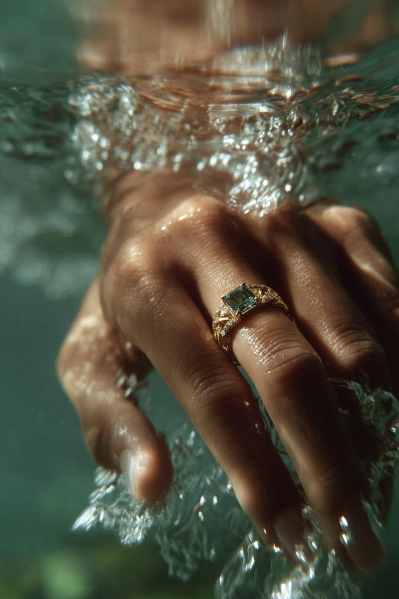

Prata 925 maciça
92,5% de prata pura, o padrão internacional de joalheria. Maciça de verdade, do aro ao fecho — nada de peças ocas que amassam com o uso.
InícioSobre
O ateliê
A Verona Campagna nasceu de uma ideia simples: joia boa não é a que brilha mais forte, é a que continua com você depois de décadas de uso.

A origem
Verona é a cidade italiana onde ourives trabalham o metal há séculos — e é de onde tiramos o nome e a escola. Campagna é o campo: o lugar onde as coisas crescem devagar, no tempo certo.
Foi dessa mistura que nasceu a nossa forma de produzir: pequenos lotes, conferência peça por peça, polimento manual e um estojo feito para guardar — não para descartar.
“Cada joia sai daqui com o peso que merece: o peso da prata maciça e o peso de quem assina.”
Materiais
Transparência total sobre o que você coloca na pele — e o que fica fora.
92,5% de prata pura, o padrão internacional de joalheria. Maciça de verdade, do aro ao fecho — nada de peças ocas que amassam com o uso.
Camada espessa de ouro 18k sobre prata, com selagem que prolonga o brilho. Ideal para quem ama o tom dourado mas quer a estrutura da prata.
Todas as ligas são livres de níquel e conferidas para uso diário — pensadas também para peles sensíveis.
Zircônias lapidadas e cristais facetados escolhidos um a um, com engaste manual que segura a pedra para a vida inteira.
Polimento, escovação e oxidação feitos peça por peça. É o que dá o contraste que fotografia não consegue esconder.
Estojo individual com porta-joia, feito para guardar, viajar e presentear. Sua peça chega pronta para ser lembrança.
Vem conhecer
Se ainda está na dúvida, comece por um anel — é a peça que mais conta a sua história.